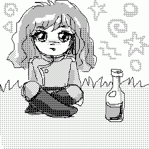
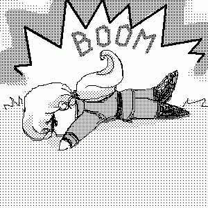

Сказка для демонов младшего дошкольного возраста.
(Скомпилировано со сказки Алана Александра Милна “Винни-Пух и все-все-все”).
Глава 5,
в которой у Куни был день рождения, а Зойчик чуть-чуть не улетел на Луну.
Куня – темный лорд - однажды стоял у зеркала и понуро смотрел на своё отражение.
- Душераздирающее зрелище, - сказал он наконец. - Вот как это называется - душераздирающее зрелище.
Он повернулся и медленно побрёл вдоль стены. Пройдя метров двадцать, он перешёл к противоположной стене и так же медленно побрёл обратно. Напротив того места, где он стоял сначала, Куня остановился и снова посмотрел в зеркало.
- Я так и думал, - вздохнул он. - С этой стороны ничуть не лучше. Но всем наплевать. Никому нет дела. Душераздирающее зрелище - вот как это называется!
Тут сзади него раздался треск, и в сполохе появился Неффи-чан.
- Доброе утро, Куня! - сказал Неф.
- Доброе утро, Неф, - уныло ответил Куня. - Если это утро доброе. В чём я лично сомневаюсь.
- Почему? Что случилось?
- Ничего, Неф, ничего особенного. Все же не могут. А некоторым и не приходится. Тут ничего не попишешь.
- Чего все не могут? - переспросил Неф, потерев нос.
- Веселиться. Петь, плясать и так далее. Под майским деревом.
- А-а, понятно... - сказал Неф.
Он глубоко задумался, а потом спросил:
- Под каким майским деревом?
- Под которым орешки калёные, - уныло продолжал Куня. - Хоровод, веселье и тому подобное. Я не жалуюсь, но так оно и есть.
Неф уселся на большой камень и попытался что-нибудь понять. Получилось что-то вроде загадки, а Неф был слабоват по части загадок, поскольку в голове у него были опилки. И он на всякий случай запел загадочную песенку:
ПРО СОРОК ПЯТОК
- Вопрос мой прост и краток, -
Промолвил Носорог,
- Что лучше - сорок пяток Или пяток сорок?
Увы, никто на это
Ответа дать не мог!
- Вот-вот, правильно, - сказал Куня. - Пой, пой. Трум-тум-тум-тирим-бум-бум. В лесу родилась палочка, в лесу она росла. И много-много радости детишкам принесла. Веселись и развлекайся.
- Я веселюсь, - сказал Неф.
- Кое-кому удаётся, - сказал Куня.
- Да что такое случилось? - спросил Неф.
- А разве что-нибудь случилось?
- Нет, но у тебя такой грустный вид.
- Грустный? Отчего это мне быть грустным? Сегодня же мой день рождения. Самый лучший день в году!
- Твой день рождения? - спросил Неф, ужасно удивлённый.
- Конечно. Разве ты не замечаешь? Посмотри на все эти подарки. - Куня помахал рукой из стороны в сторону. - Посмотри на именинный пирог!
Неф посмотрел - сначала направо, потом налево.
- Подарки? - сказал он. - Именинный пирог? Где?
- Разве ты их не видишь?
- Нет, - сказал Неф.
- Я тоже, - сказал Куня. - Это шутка, - объяснил он. - Ха-ха.
Неф почесал в затылке, совсем сбитый с толку.
- А сегодня правда твой день рождения? - спросил он.
- Правда.
- Ох! Ну, поздравляю тебя и желаю много-много счастья в этот день.
- И я тебя поздравляю и желаю много-много счастья в этот день, Неф.
- Но ведь сегодня не мой день рождения.
- Нет, не твой, а мой.
- А ты говоришь “желаю тебе счастья в этот день”.
- Ну и что же? Разве ты хочешь быть несчастным в мой день рождения?
- А, понятно, - сказал Неф.
- Хватит и того, - сказал Куня, чуть не плача, - хватит и того, что я сам такой несчастный - без подарков и без именинного пирога, и вообще позабытый и позаброшенный, а уж если все остальные будут несчастны...
Этого Неффи-чан уже не вынес.
- Постой тут! - крикнул он и со всех ног помчался домой. Он почувствовал, что должен немедленно преподнести бедному лорду хоть что-нибудь, а потом у него всегда будет время подумать о Настоящем Подарке.
Возле своего дома он наткнулся на Зойчика, который прыгал у двери, стараясь достать кнопку звонка.
- Здравствуй, Зойчик, - сказал Неффи-чан.
- Здравствуй, Неффи, - сказал Зойчик.
- Что это ты делаешь?
- Я стараюсь позвонить, - объяснил Зойчик. - Я тут шёл мимо и...
- Давай я тебе помогу, - сказал Неф услужливо.
Он подошёл к двери и нажал кнопку.
- А я только что видел Куню, - начал он. - Бедный лорд ужасно расстроен, потому что у него сегодня день рождения, а все о нём забыли, и он очень понурился - ты ведь знаешь, как он умеет, - ну и вот он такой понурый, а я... Да что же это нам никто не открывает - заснули они все там, что ли? - И Неф снова позвонил.
- Неф, - сказал Зойчик. - Это же твой собственный дом!
- А-а, - сказал Неф. - Ну да, верно! Тогда давай войдём! И они вошли в дом.
Неф первым делом подошёл к буфету, чтобы удостовериться, есть ли у него подходящая, не особенно большая бутылка с вином. Бутылка оказалась на месте, и Неф снял ее с полки.
- Я ее отнесу Куне, - объяснил он. - В подарок. А ты что ему думаешь подарить?
- А можно, я тоже ее подарю? - спросил Зойчик. - Как будто от нас обоих.
- Нет, - сказал Неф. - Это ты плохо придумал.
- Ну, тогда ладно. Я подарю Куне воздушный шарик. У меня остался один от праздника. Я сейчас за ним схожу, хорошо?
- Вот это ты очень хорошо придумал, Зойчик! Ведь Куню нужно развеселить. А с воздушным шариком кто хочешь развеселится! Никто не может грустить, когда у него есть воздушный шарик!
Ну, и Зойчик пустился рысцой домой, а Неф с бутылкой вина направился к ручью.
День был жаркий, а путь неблизкий, и, не пройдя и полпути, Неф вдруг почувствовал какое-то странное щекотание. Сначала у него защекотало в носу, потом в горле, а потом засосало под ложечкой и так постепенно дошло до самых пяток. Казалось, словно кто-то внутри у него говорил: “Знаешь, Неф, сейчас самое время чем-нибудь немножко...”
- Ай-ай, - сказал Неф, - я и не знал, что уже так поздно!
Он сел на землю и вынул пробку из своей бутылки.
- Как хорошо, что я взял ее с собой, - сказал он. - Немало демонов в такой жаркий день и не подумали бы захватить с собой то, чем можно немножко подкрепиться!.. 
- А теперь подумаем, - сказал он, в последний раз облизав губы, - подумаем, куда же это я собирался идти. Ах да, к Куне.
Неффи-чан не спеша встал. И тут он вдруг всё вспомнил. Он же выпил Подарок!
- Ай-ай-ай! - сказал Неф. - Что мне делать? Я же должен подарить ему что-нибудь! Ай-ай-ай-ай-ай!
Сперва он прямо не знал, что и думать. А потом он подумал:
“Всё-таки это очень хорошенькая бутылочка, хотя в ней и нет вина. Если я ее как следует вымою и попрошу кого-нибудь написать на нём: “Поздравляю с днём рождения”, Куня сможет держать в ней всё, что хочешь. Это будет полезная вещь!”
И так как он в это время был недалеко от Дома Квины - а все в Темном Королевстве были уверены, что Квина прекрасно умеет писать, - он решил зайти к ней в гости.
- Доброе утро, Квина! - сказал Неф.
- Доброе утро, Неф! - ответила Квина.
- Поздравляю тебя с днём рождения Куни, - сказал Неф.
- Вот как? - удивилась Квина.
- Да.
- А что ты ему думаешь подарить?
- Я несу ему в подарок Полезную Бутылку, в которой можно держать всё, что хочешь, - сказал Неф. - И я хотел попросить тебя...
- Вот эта? - спросила Квина, взяв бутылку из рук Нефа.
- Да, и я хотел попросить тебя...
- Тут когда-то держали вино, - сказала Квина.
- В ней можно что хочешь держать, - серьёзно сказал Неф. - Это очень, очень полезная вещь. И я хотел попросить тебя...
- Ты бы написал на ней: “Поздравляю с днём рождения”.
- Так вот об этом я и пришёл тебя попросить! - объяснил наконец Неф. - Потому что у меня правильнописание какое-то хромое. Вообще-то оно хорошее правильнописание, но только почему-то хромает и буквы опаздывают... на свои места. Ты напишешь на ней: “Поздравляю с днём рождения”? Очень тебя прошу!
- Славная бутылочка, - сказала Квина, оглядев бутылочка со всех сторон. - А можно, я ее тоже подарю? Пусть это будет наш общий подарок.
- Нет, - сказал Неф. - Это ты плоховато придумала. Давай я лучше ее сперва помою, а потом ты на ней всё напишешь.
И вот он вымыл бутылку и вытер ее досуха, а Квина тем временем мусолила кончик своего карандаша и думала, как же пишется слово “Поздравляю”.
- Неф, а ты умеешь читать? - спросила она не без тревоги в голосе. - Вот, например, у меня на двери висит объявление, как звонить. Ты можешь его прочесть?
- Джед сказал мне, что там написано, и тогда я уж смог, - ответил Неф.
- Очень хорошо! Вот и я тоже скажу тебе, что тут на бутылке будет написано, и тогда ты сможешь прочитать!
И Квина начала писать... Вот что она написала: “Про зря вля бля сдине мраш деня про зря бля бля вля!”
Неф с восхищением посмотрел на эту надпись.
- Я тут написала: “Поздравляю с днём рождения”, - небрежно заметила Квина.
- Вот это надпись так надпись! - с уважением сказал Неффи-чан.
- Ну, если уж всё тебе сказать, тут написано полностью так: “Поздравляю с днём рождения, желаю всего-всего хорошего. Твой Неф”. Я не посчиталась с расходом графита.
- Чего? - спросил Неф.
- Тут одного карандаша сколько пошло! - пояснила Квина.
- Ещё бы! - сказал Неф.
Тем временем Зойчик успел сбегать к себе домой и, захватив воздушный шарик для Куни, понёсся во весь дух, крепко прижимая воздушный шар к груди, чтобы его не унесло ветром. Зойчик ужасно спешил, чтобы поспеть к Куне раньше Нефа; ему хотелось первым преподнести лорду подарок, как будто он, Зойчик, сам вспомнил про его день рождения, без всякой подсказки. Он так спешил и так задумался о том, как Куня обрадуется подарку, что совсем не глядел себе под ноги... И вдруг его нога попала в мышиную норку, и бедный Зойчик полетел носом вниз: БУМ!!!
Зойчик лежал на земле, не понимая, что же произошло. Сперва он подумал, что весь мир взлетел на воздух, потом он подумал, что, может быть, только их любимое Темное Королевство; ещё потом - что, может быть, только он, Зойчик, взлетел и сейчас он один-одинёшенек лежит где-нибудь на Луне и никогда-никогда не увидит больше ни Нефа, ни Джеда, ни Куню... И тут ему пришло в голову, что даже и на Луне не обязательно всё время лежать носом вниз. Он осторожно встал, осмотрелся кругом. Он всё ещё был в Темном Королевстве!
“Очень интересно! - подумал он. - Интересно, что же это был за Бум? Не мог же я сам наделать столько шуму, когда упал! И где, интересно, мой шар? И откуда, интересно, взялась тут эта тряпочка?”
О ужас! Эта тряпочка - это и был, именно был! - его воздушный шар!!
- Ой, мама! - сказал Зойчик. - Ой, мама, ой, мамочка, ой, мама, мама, мама! Ну что ж... Теперь делать нечего. Возвращаться назад нельзя. Другого шара у меня нет... Может быть, Куня не так уж любит воздушные шары?..
И он побежал дальше. По правде сказать, бежал он уже не очень весело, но всё же скоро он добежал до той самой комнаты, где стоял Куня и по-прежнему смотрел на своё отражение в зеркале.
- Доброе утро, Куня! - крикнул Зойчик ещё издали.
- Доброе утро, Зойчик, - сказал Куня. - Если это утро - доброе, - добавил он, - в чём я лично сомневаюсь. Но это неважно.
- Поздравляю тебя с днём рождения, - сказал Зойчик, подойдя тем временем поближе.
Куня оторвался от своего занятия и уставился на Зойчика.
- Повтори-ка, повтори, - сказал он. - Так как ты сказал, повтори, - произнёс он, приложив руку к уху.
- Поздравляю с днём рождения, - повторил Зойчик.
- Это ты меня?
- Конечно, Куня.
- С моим днём рождения?
- Да.
- Значит, у меня настоящий день рождения?
- Конечно, Куня, и я принёс тебе подарок.
Куня медленно опустил правую руку и приложил к уху левую.
- Я хочу послушать ещё другим ухом, - пояснил он. - Теперь говори.
- По-да-рок! - повторил Зойчик очень громко.
- Мне?
- Да.
- Ко дню рождения?
- Конечно!
- Значит, у меня получается настоящий день рождения?
- Конечно! И я принёс тебе воздушный шар.
- Воздушный шар? - сказал Куня. - Ты сказал - воздушный шар? Это такие большие, красивые, яркие, их ещё надувают? Песни-пляски, гоп-гоп-гоп и тру-ля-ля?
- Ну да, но только... понимаешь... я очень огорчён... понимаешь... когда я бежал, чтобы поскорее принести тебе его, я упал.
- Ай-ай, как жаль! Ты, наверно, слишком быстро бежал. Я надеюсь, ты не ушибся, Зойчик?
- Нет, спасибо, но он... он... Ох, Куня, он лопнул.
Наступило очень долгое молчание.
- Мой шарик? - наконец спросил Куня.
Зойчик кивнул.
- Мой деньрожденный подарок?
- Да, Куня, - сказал Зойчик, слегка хлюпая носом. - Вот он. Поздравляю тебя с днём рождения.
И он подал Куне резиновую тряпочку.
- Это он? - спросил Куня, очень удивлённый.
Зойчик кивнул.
- Мой подарок?
Зойчик снова кивнул.
- Шарик?
- Да.
- Спасибо, Зойчик, - сказал Куня. - Извини, пожалуйста, - продолжал он, - но я хотел бы спросить, какого цвета он был, когда... когда он был шариком?
- Зеленого.
- Подумать только! Зеленого... Мой любимый цвет, - пробормотал Куня про себя. - А какого размера?
- Почти с меня.
- Да? Подумать только, почти с тебя!.. Мой любимый размер! - грустно сказал Куня себе под нос. - Так, так.
Зойчик чувствовал себя очень неважно и прямо не знал, что говорить. Он то и дело открывал рот, собираясь что-нибудь сказать, но тут же решал, что именно этого говорить-то и не стоит. И вдруг, на его счастье, из коридора их кто-то окликнул. То был Неф.
- Желаю много-много счастья! - кричал Неф, очевидно забыв, что он уже это говорил.
- Спасибо, Неф, мне уже посчастливилось, - уныло ответил Куня.
- Я принёс тебе подарочек, - продолжал Неф радостно.
- Есть у меня подарочек, - отвечал Куня.
Тем временем Неф зашел в комнату и подошёл к Куне. Зойчик сидел немного поодаль, хлюпая носом.
- Вот он, - объявил Неф. - Это - Очень Полезная Бутылка. А на ней знаешь чего написано? “Поздравляю с днём рождения, желаю всего-всего хорошего. Твой Неф”. Вот сколько всего написано! И в нее можно класть что хочешь. Держи.
Куня, увидев бутылку, очень оживился.
- Вот это да! - сказал он. - Знаете что? Мой шарик как раз войдёт в эту бутылку!
- Что ты, что ты, Куня, - сказал Неф. - Воздушные шары не входят в бутылку. Они слишком большие. Ты с ними не умеешь обращаться. Нужно вот как: возьми шарик за вере...
- Это другие шары не входят, а мой входит, - с гордостью сказал Куня. - Гляди, Зойчик!
Зойчик грустно оглянулся, а Куня щелкнул пальцами и его бывший шарик оказался в бутылке, потом снова щелкнул пальцами и шарик оказался снаружи, а потом снова щелкнул пальцами и шарик снова оказался в бутылке.
- Выходит! - закричал Неф. - Я хочу сказать, он входит!
- Входит! - закричал Зойчик. - И выходит!
- Здорово выходит! - сказал Куня. - Входит и выходит - прямо замечательно!
- Мне очень приятно, - радостно сказал Неф, - что я догадался подарить тебе Полезную Бутылку, куда можно класть какие хочешь вещи!
- А мне очень приятно, - радостно сказал Зойчик, - что я догадался подарить тебе такую Вещь, которую можно класть в эту Полезную Бутылку!
Но Куня ничего не слышал. Ему было не до того: он то клал свой шар в бутылку, то вынимал его обратно, и видно было, что он совершенно счастлив!
Конец пятой главы.